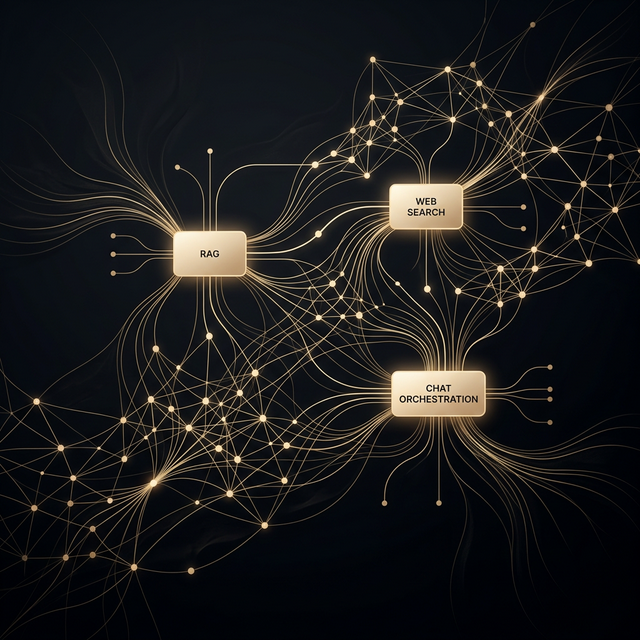
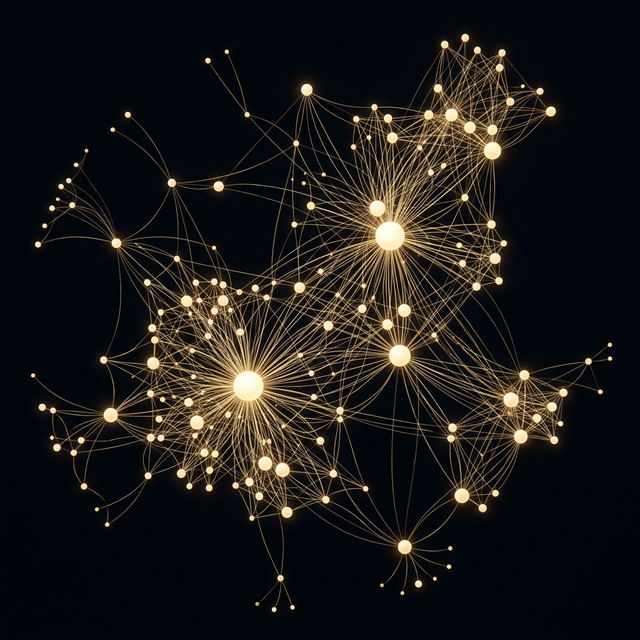
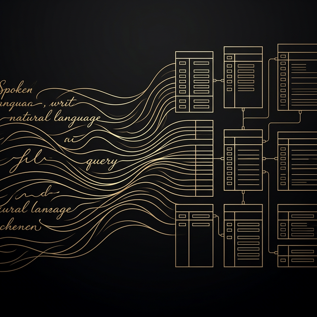
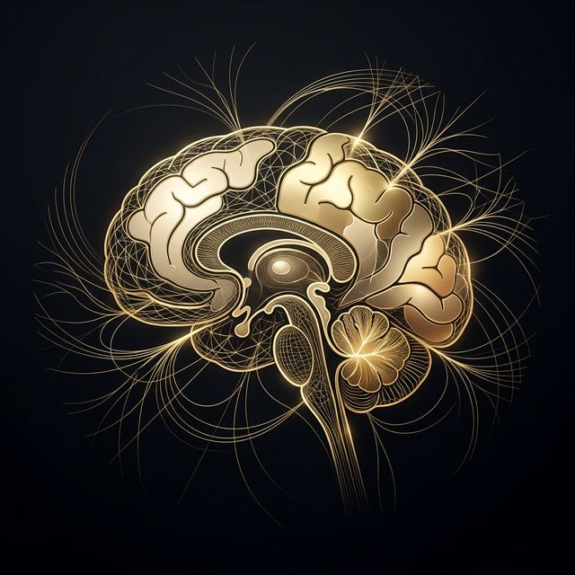
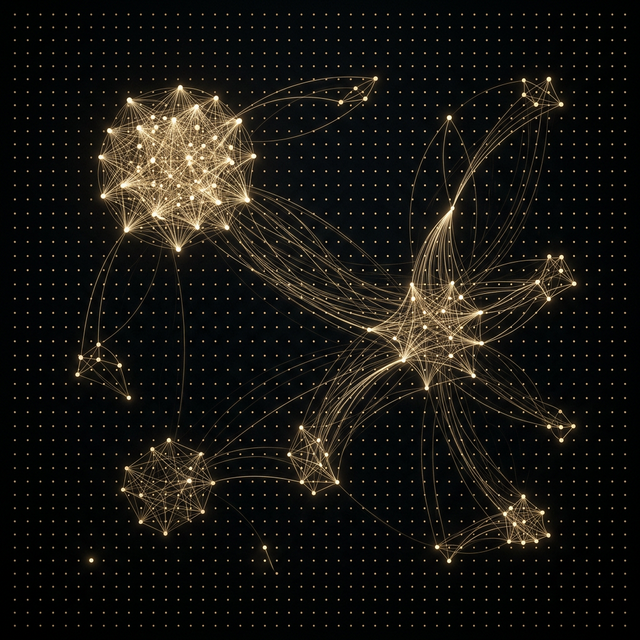

AI Systems Architect
Engineering
Intelligence.
I architect production AI infrastructure — LLM orchestration, RAG
pipelines,
scalable backend systems, and native mobile applications.
About
The relentless pursuit of
engineered excellence.
Computer Science engineer specializing in artificial intelligence and machine learning, with a secondary focus in financial technology. My practice spans autonomous multi-agent AI orchestration, generative adversarial networks for image synthesis, domain-specific large language models with adversarial robustness, and native Android application development deployed to production.
Previously, I architected AI infrastructure at Broadrange AI (Chicago) — engineering legal domain LLMs with retrieval-augmented generation and prompt injection defense systems — and delivered production Android applications at Techpuram Technology (Madurai) with verified distribution on the Google Play Store.
Expertise
Precision-engineered
capabilities.
AI & LLM Infrastructure
Production RAG pipelines, BERT-driven intent classification, multi-agent orchestration with dynamic tool routing, adversarial prompt defense, and autonomous AI systems engineered for scale and reliability.
Native Mobile Engineering
Production-grade Android applications — Kotlin, Jetpack Compose, CameraX, on-device inference via TensorFlow Lite. Applications with verified distribution on Google Play and runtime GPS validation.
Deep Learning & Vision
GAN-based super-resolution architectures (Real-ESRGAN), U-Net semantic segmentation for medical imaging, and transfer learning pipelines optimized for production inference latency.
Backend & Data Architecture
Scalable microservice topologies, REST API design, vector database integration, schema-aware query generation, and end-to-end deployment orchestration from prototype to production.
Frontend & Data Visualization
Responsive interface engineering with React and Next.js. Interactive graph and data visualizations via D3.js. Component-driven architecture for maintainable, performant UIs.
Distributed & Embedded Systems
Smart contract development on Ethereum, decentralized consensus mechanisms, hardware-level IoT sensor integration with embedded C++ firmware, and real-time telemetry systems.
Career
Professional
trajectory.
AI Engineer
Broadrange AI · Chicago, Illinois
Architected Legal Domain LLM with retrieval-augmented generation infrastructure. Engineered document ingestion pipelines with semantic chunking for contextual grounding. Implemented PromptGuard V2 for adversarial prompt defense. Reduced hallucination through curated legal corpus training and retrieval-augmented validation.
Android Engineer
Techpuram Technology · Madurai, Tamil Nadu
Engineered Geo GPS Camera — production Android application with verified Play Store distribution. Developed with Kotlin, Jetpack Compose, CameraX, and Maps SDK. Implemented server-side GPS spoofing detection. Integrated on-device ML inference for print quality defect analysis via TensorFlow Lite.
Education
B.Tech (Hons) Computer Science & Engineering
RV University, Bangalore · 2023 — 2027
Specialization: AI & Machine Learning · Minor: Financial
Technology
Recipient — Best Project Award, Structured
Innovation
Higher Secondary — PCM
Delhi Public School, Patna · 2010 — 2023
Credentials
Programming in Modern C++
NPTEL · 2024 — 2025
Supervised ML: Regression & Classification
Stanford Online · 2024
Business Analysis Essentials
Microsoft & LinkedIn · 2024
Selected Work
Systems
I've architected.

{kind=link}
IntelliChat AI
Microservice-based AI orchestration platform with dynamic tool routing across RAG, web retrieval, and conversational services. BERT-driven intent classification with real-time prompt triage and multi-step reasoning chains.

{kind=link}
GraphRAG
Hybrid retrieval architecture combining NetworkX knowledge graph traversal with FAISS vector similarity search and Groq LLM inference. Interactive D3.js topology visualization with document ingestion and semantic chunking.
{kind=link}
Legal AI LLM
Domain-specific large language model engineered for legal corpus analysis. PromptGuard V2 integration for adversarial prompt injection defense. RAG architecture with contextual grounding and hallucination mitigation.

{kind=link}
AI Database Manager
Natural language to SQL transpilation via locally hosted Mistral inference (Ollama). Schema-aware prompt engineering with SQL validation, snapshot-based rollback, and human-in-the-loop execution gates.
{kind=link}
Offline Voice Intelligence
Fully offline conversational AI for Apple Silicon. Local speech-to-text pipeline, on-device LLM inference, multi-turn conversation state management. Zero cloud dependency — complete air-gapped intelligence.
{kind=link}
Image Super-Resolution
Fine-tuned Real-ESRGAN architecture via transfer learning with custom composite loss balancing on paired high-resolution/low-resolution datasets. Production-grade upscaling pipeline.

{kind=link}
Brain Tumor Segmentation
U-Net encoder-decoder architecture for pixel-level semantic segmentation of brain tumors from MRI volumes. Precision lesion boundary delineation with multi-class tissue classification.
{kind=link}
Geo GPS Camera
Production Android application with verified Play Store distribution. Secure location-tagged image acquisition with server-side GPS coordinate validation and spoofing detection infrastructure.
{kind=link}
Decentralized Voting Protocol
Tamper-proof electoral system on Ethereum smart contracts. Immutable ballot recording, transparent audit trails, and decentralized consensus verification via Web3.js interface.
{kind=link}
Glucosence
Non-invasive glucose concentration monitoring via saliva-based biosensor input. Embedded C++ firmware with custom analog sensor integration, real-time telemetry display, and calibration routines.

{kind=link}
Recommendation Engine
Content-based and collaborative filtering recommendation system with feature extraction, similarity computation, and real-time inference pipeline served via Flask API.
{kind=link}
Credibility Analysis Engine
NLP-driven news credibility classification system with TF-IDF vectorization, ensemble classification models, and real-time inference API for editorial verification workflows.
Contact
Let's engineer
something remarkable.
Whether it's production AI infrastructure, a native application, or an ambitious technical challenge — I welcome conversations that lead to exceptional engineering outcomes.